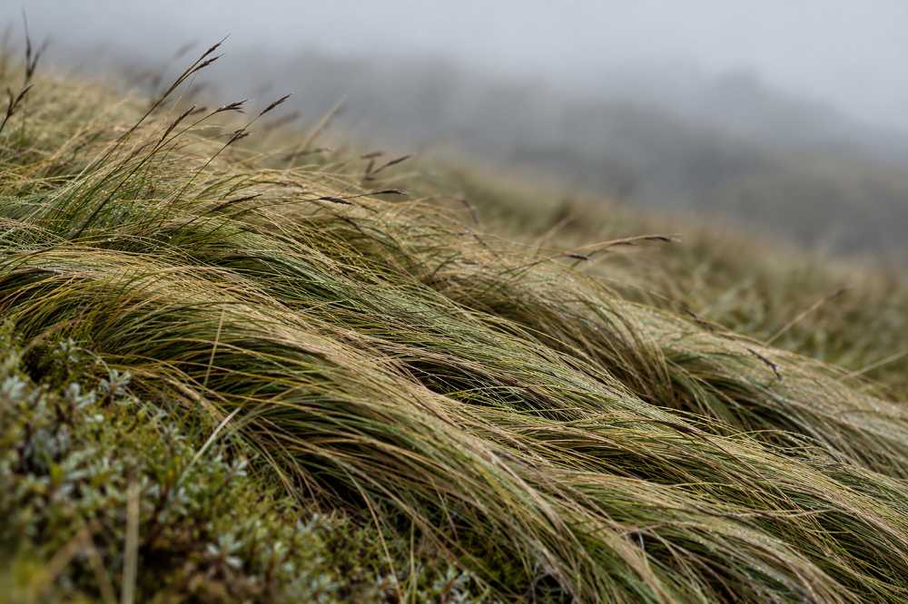

Inicio > Notas críticas > Desde Quisquiza (14 de 20)
Desde Quisquiza (14 de 20)
Viento
Lo que dobla el aire
Esta nota forma parte de una serie escrita desde Quisquiza, en los Andes colombianos, donde territorio y trabajo intelectual ya no están separados. Examina cómo ese cruce transforma mi manera de pensar la memoria, la información y las estructuras que las sostienen. Consulte todas las notas en el índice de esta sección.
Aquí arriba, en Quisquiza, el viento raramente luce espectacular.
No suele llegar con bombos y platillos, como un evento de esos que mandan ramas o chapas a volar y le dan a tod ala vereda algo de qué hablar a la mañana siguiente. La mayoría de las veces se limita a estar ahí, soplando sobre todo desde el este, cruzando las montañas, o a veces desde el sur, moviéndose por los potreros y los bordes del bosque con suficiente persistencia como para que los prados de hierba se pasen días enteros inclinados más o menos en la misma dirección.
(Me encantaría decir que también me despeina. Por desgracia, cada vez queda menos material disponible para ese tipo de tareas).
El efecto se ve con mayor claridad en los árboles jóvenes. Algunos crecen con una ligera inclinación; otros desarrollan copas irregulares, particularmente cuando están expuestos por un lado y protegidos por el otro. Durante las ráfagas más fuertes, los troncos se les doblan, las ramas se mueven de un lado a otro, las hojas giran y aletean, y las raíces y la parte baja del tronco soportan la tensión producida arriba. Cuando el aire se queda quieto, todo ese movimiento desaparece. Lo que queda es una planta cuyo crecimiento tuvo lugar bajo esas condiciones.
Las plantas, en efecto, responden al estrés mecánico repetido. El viento no es algo que soportan mientras continúan creciendo de acuerdo con un plan independiente. La flexión y el movimiento recurrentes afectan al propio crecimiento: los tallos pueden volverse más cortos y gruesos, la madera se desarrolla en respuesta a las cargas, y la relación entre copa, tronco y raíces cambia a medida que la planta se ajusta a las fuerzas que actúan sobre ella. Los botánicos le han dado a parte de esta respuesta el nombrecito de "tigmomorfogénesis", palabra que básicamente describe las formas en las que el crecimiento vegetal cambia como respuesta a la estimulación mecánica.
Los resultados se vuelven especialmente evidentes allí donde el viento es persistente y direccional. Los árboles expuestos durante años pueden desarrollar formas notablemente diferentes a las de individuos de la misma especie que crecen apenas unos metros más allá, en lugares protegidos. Su arquitectura constituye, en parte, un registro de condiciones que quizás ya no estén presentes cuando alguien se detiene a observarlos. En una mañana tranquila, no hay ninguna ráfaga visible que explique el ángulo de un tronco o el desarrollo desigual de una copa. Hay que reconstruir parte de la historia a partir de la propia forma.
Eso me interesa mucho porque tendemos a pensar en las influencias a través de eventos. Algo interviene, produce un efecto y deja una huella que nos permite conectar ambas cosas. Pero muchas fuerzas operan de una manera mucho menos dramática. Actúan mediante la repetición, mediante pequeñas diferencias mantenidas a lo largo del tiempo, y terminan siendo difíciles de separar de la estructura que se desarrolló bajo ellas.
La investigación funciona de esa manera.
Un campo de investigación no crece únicamente a partir de las preguntas que los investigadores, de manera independiente, deciden que son importantes. También se desarrolla dentro de sistemas de financiación, prioridades universitarias, programas gubernamentales, prácticas de publicación, tecnologías disponibles, incentivos profesionales, y todo aquello que esté intelectualmente de moda en un momento determinado. Nada de eso determina, por necesidad, lo que hace un investigador particular. Los investigadores ignoran incentivos, persiguen problemas que no están para nada de moda, trabajan sin financiación, e inventan caminos para sortear obstáculos institucionales todo el tiempo. Pero, a lo largo de años y décadas, la distribución de recursos y oportunidades hace que ciertas trayectorias sean más fáciles de seguir que otras.
La financiación es un ejemplo obvio. Una convocatoria no necesita prohibir un tema concreto para influir sobre un campo. Puede limitarse a hacer que varios otros temas sean considerablemente más fáciles de investigar. Se equipan laboratorios, se crean becas, se producen conjuntos de datos, aparecen congresos... Los investigadores formados dentro de esos proyectos diseñan después proyectos propios. Tras suficientes ciclos, un área que inicialmente se benefició de una prioridad de financiación puede llegar a contar con el personal, el vocabulario, la infraestructura y la evidencia acumulada necesarias para atraer todavía más trabajo.
La ráfaga original hace mucho que pasó, pero el paisaje de la investigación ya no es el mismo.
Las bibliotecas y los archivos se desarrollan bajo presiones similares. Los presupuestos de adquisición, los mandatos institucionales, las normas de catalogación, los intereses de los donantes, las prioridades de preservación, el personal disponible, la legislación y las relaciones con determinadas comunidades afectan lo que entra en una colección y lo que no. Algunos materiales llegan acompañados de dinero, experiencia y prácticas descriptivas ya establecidas. Otros requieren un trabajo que la institución nunca ha financiado, lenguas que nadie puede leer, relaciones que tardan años en construirse o formas de descripción que los sistemas existentes manejan mal.
Con el tiempo, la propia colección empieza a parecer una representación objetiva de lo que existe o de lo que fue importante. Es muy fácil olvidar que también tiene una historia de exposición.
El mismo problema aparece en la clasificación. Las categorías que se han utilizado y mantenido durante décadas se vuelven densas en definiciones, referencias cruzadas, registros de autoridad e infraestructura técnica. Aquellas cosas que llegaron después, o que nunca fueron consideradas cuando se construyó el sistema original, pueden quedar torpemente adheridas a los márgenes. Su posición marginal puede entonces parecer una propiedad de las cosas mismas, en lugar de una consecuencia de la historia de la estructura que las describe.
Nada de esto significa que la influencia institucional funcione como un viento dominante en ningún sentido simple o determinista. Los seres humanos discuten, se niegan, redirigen recursos, crean instituciones alternativas, cambian vocabularios y, a veces, desmontan las estructuras que heredaron. Tampoco toda irregularidad en una colección o en una disciplina puede rastrearse hasta una única presión externa. Hay demasiadas fuerzas implicadas para eso: la historia, el azar, las personalidades, las tecnologías, los conflictos, las oportunidades, las ausencias, las decisiones cuyas consecuencias nadie fue capaz de prever...
Pero esa complejidad hace que la pregunta sea más útil. Cuando una estructura de conocimiento parece asentada, podemos preguntarnos cuánto de su forma actual refleja los objetos que contiene y cuánto refleja las condiciones bajo las cuales pudo desarrollarse. Podemos observar tanto las concentraciones como los vacíos, aquello que creció con facilidad y aquello que tuvo que pelear por un espacio, y también las presiones institucionales: esas que se volvieron tan comunes que, con el tiempo, dejaron de parecer presiones.
Esta mañana casi no hay viento alrededor de la casa. Los yuyos que pasaron buena parte de ayer moviéndose ya están quitos, lo mismo que las ramas bajas del borde del bosque. Algunos de los árboles más jóvenes todavía se inclinan ligeramente en la dirección en la que llevan meses creciendo.
Sin el movimiento de ayer, sería muy fácil asumir que esa es simplemente su forma.
¿ Y sí, es su forma. Pero también es su historia.